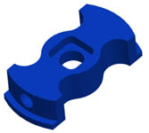
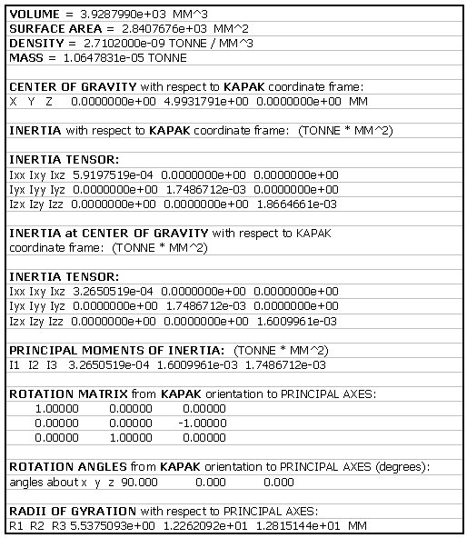
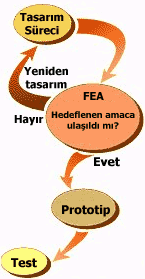
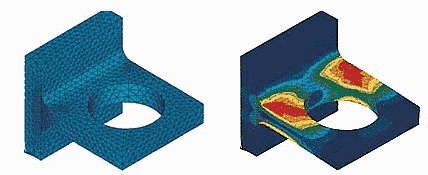
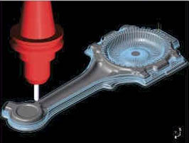

2. CAD/CAM Sisteminin Fonksiyonlarý:
CAD,
bilgisayar sistemlerinin kullanýlarak parça oluþturma, deðiþtirme,
analiz ve tasarýmýn optimizasyonu gibi iþlemleri kapsamaktadýr.
Bu sistemler yazýlým ve donaným kýsýmlarýndan oluþur. Yazýlým
olarak, parçalarýn gerilme-þekil deðiþimi analizinin yapýlabildiði
programlar, mekanizmalarýn dinamik cevaplarý, ýsý transferi
hesaplarý ve NC parça programlama gibi örnekleri verilebilir.
CAM,
bilgisayar sistemlerinin planlama, yönetme ve bir imalat
sürecinin kontrolünde doðrudan veya dolaylý olarak kullanýlarak
yapýlan iþlemleri kapsamaktadýr. Ýmalatta CAM örneði olarak
NC parça programlamanýn bilgisayar yardýmýyla yapýlmasý
verilebilir. CAD/CAM teknolojisi tasarým ve imalatýn daha
fazla entegrasyonu yönünde geliþmektedir. CAM aþaðýda sýralanan
fonksiyonlarý yerine getirebilmektedir.
-
Tasarým
-
Analiz
-
Çizim
-
Süreç
Planlama
-
Parça
Programlama
-
Program
Doðrulama
-
Parça
Ýþleme
-
Muayene
Bu
fonksiyonlar aþaðýda açýklanmýþtýr.
Tasarým:
Tasarýmcý kafasýndaki fikirleri bir grafik ekranýna yansýtabilir
(Þekil 1). Parçalarýn birbirine uygunluðunu görülebilir.
Parametrik tasarým gerçekleþtirilerek benzer ürün aðacýndan
parçalarýn tasarýmý için süre kazanmýþ olur. Deðiþken parametreler
girilerek istenilen tasarým parametrik olarak elde edilebilir.
Bu parametreler optimize edilebilir veya diðer bazý özelliklerin
fonksiyonu olarak tanýmlanabilir.

Þekil 1. "Kapak" adlý parçanýn katý modeli
Analiz
olanaklarý: Tasarlanan parçanýn ve onun kullanýlarak
oluþturulduðu montajýn kütlesel özellikleri tespit edilebilir
ve sonlu elemanlar yöntemi (Finite Element Method -FEM,
Finite Element Analysis - FEA) kullanýlarak çok amaçlý analizler
yapýlabilir.
Kütlesel
özellikler olarak; montajý oluþturan her bir parçanýn aðýrlýðý,
kesit atalet momenti, bir noktaya göre kütlesel atalet momenti,
aðýrlýk merkezi gibi büyüklükler kolayca elde edilebilir.
Yine bu büyüklükler parametrik olarak tanýmlanabilir. Parçanýn
bir boyutuna veya özelliliðine göre tanýmlanabilir ve optimize
edilebilir. Aþaðýda Þekil 2'de görülen kapak adlý parçanýn
kütle özellikleri ilgili yazlýmdan çýkarýlmýþtýr.

Þekil 2. Parçanýn kütlesel özellikleri
FEA
(Finite Element Analysis):
FEA
ile gerçek iþlemede ortaya çýkan sýcaklýk ve gerilme gibi
faktörlerin simulasyonu gerçekleþtirilebilir. FEA ile mekanik
bileþen ve yapýlarýn lineer statik, dinamik, ýsý transferi
ve potansiyel akýþ davranýþlarý modellenip analiz edilebilir.
Burada amaç; daha kýsa geliþtirme süreleri ve düþük maliyetlerdir.
FEA ile ürün veya model üzerinde yapýlmasý gerekli denemeler
bilgisayar ortamýna kaydýrýlmýþ olur. Bu maliyeti düþüren
bir etkendir. FEA ayný zamanda fiziksel ve matematik problemleri
de temsil eder ve belli yaklaþýmlar dahilinde fakat kabül
edilebilir çözümler saðlayan nümerik metotlar kullanýlýr.
FEA ile elde edilen analiz sonuçlarý tasarýma uygulanýr
(Þekil 3).

Þekil 3. Tasarým sürecinde FEA
FEA
temel olarak üç safhada gerçekleþtirilir.
-
Ön
iþlem: Model geometrisinin geliþtirilmesi, fiziksel özellikler
ve malzeme özelliklerinin belirlenmesi, yükler ve sýnýr
þartlarýnýn tanýmlanmasý ve modelin kontrol edilmesi,
-
Çözüm:
Lineer statik, lineer dinamik, ýsý transferi ve potansiyel
akýþ analizinin yapýldýðý kýsým,
-
Son
iþlem: Analiz edilen büyüklüðün (gerilme, þekil deðiþimi,
deformasyon vb.) görülebildiði ve maksimum müsaade edilebilir
hasar, malzeme statik ve yorulma mukavemetleri gibi sonuçlarýn
kritik deðerlerle karþýlaþtýrýlabildiði safhadýr.
FEA
aþaðýdaki özelliklere sahiptir;
-
Karmaþýk
parçalara rahatlýkla uygulanabilir. (Analizler, karmaþýk
ve büyüklük parçalar için kullanýlan yazýlým ve bilgisayar
imkanlarýyla sýnýrlýdýr)
- Sýnýr
þartlarý ve malzeme özellikleri analiz sonuçlarýnýn doðruluðu
açýsýndan çok önemlidir
-
Uygulama
herhangi bir tecrübe gerektirmez. Fakat daha önceden elde
edilen bilgiler iþleme aktarýlabilir, test ve deney sonuçlarý
kullanýlabilir
-
Parçanýn
tasarým ve imalatýnda karþýlaþýlabilecek bir çok büyüklük
analizlerle elde edilebilir. Örneðin; yükleme þartlarýna
göre ortaya gerilme durumu veya imalatta parça üzerinde
oluþacak sýcaklýk gibi
-
Simulasyon
ile parça imalatýnda ortaya çýkabilecek muhtemel hatalarýn
en aza indirilmesi
-
Üretilen
parçaya göre optimizasyon stratejisi geliþtirilebilir.
Elde edilen analiz sonuçlarý tasarým aþamasýnda parçaya
uygulanabilir
-
Çok
kademeli iþlemlerin azaltýlmasý için optimizasyon yapýlabilir
(süreç optimizasyonu)...
-
FEM ve geometrik karmaþýklaþtýkça analiz sonuçlarýnýn elde
edilmesi uzun sürebilir
-
FEA
maliyeti üretim giderleri düþünüldüðünde göreceli düþüktür,
hýzlýdýr ve esnektir

Þekil 4. Bir FEA Modeli, (Solda küçük elemanlara bölünmüþ
model, saðda sýnýr þartlar altýnda parçanýn analiz sonuçlarý
görülmektedir)
Çizim:
Tasarlanan parçanýn grafik ekranda oluþturulmasý.
Bilgisayar
Destekli Süreç Planlama (Computer Aided Process Planning
-CAPP): Her parça ürün aðacý için standart bir iþlem
planý yapýlýr. Bu plan bilgisayarda saklanýr. Daha sonraki
ayný ürün aðacýnda yeni parçalar için bu plan kullanýlýr.
Bazý yeni parçalar için düzeltme gerekebilir. Bu, parçanýn
standarttan farklý olmasý durumunda yapýlýr.
Parça
Programlama: Parça geometrisi tanýmlanarak bir veri
tabaný oluþturulur. Parça programý otomatik olarak oluþturulur.
Bunun için APT türü programlama teknikleri kullanýlabilir.
Oluþturulan NC programlar APT/CL (cutter location) dosya
formatýnda saklanýr.
Program
Doðrulama:
CNC
tezgah kullanýcýlarýn, NC programlarýnýn hazýrlanmasýndan
sonra üretime geçmeden önce daima zihinlerinde bir soru
iþareti kalýr. "NC program gerçekten istenildiði gibi
çalýþacak mý?" Bu sorunun cevabýný almak için genelde
yapýlan iþlem, deneme kesimi yapmaktýr. Bu iþlem þirket
için yüksek maliyetlidir ve büyük zaman kaybýdýr. Kesim
zamaný, kesim maliyeti ve herhangi bir hatada hatanýn giderilmesi
kalýp üreticilerine masrafý çok fazladýr. Bu deneme kesimine
son verecek en iyi çözüm yapýlmýþ NC programýn bir simülasyonunun
izlenmesidir. Çýkarýlan parça programýnýn iþleme sokulmadan
önce simülasyonunun izlenmesi yararlýdýr (Þekil 5). Muhtemel
büyük hatalar bu þekilde önlenebilir. Bu þekilde malzemenin
kesim iþleminde yerleþtirilmesi, kesme programý ve parametrelerinin
kontrolü yapýlmýþ olur.

Þekil 5. Bir CAM yazýlýmýnda freze program doðrulama
modülü
Parçanýn
grafik gösterimi tel kafes, yüzey model, katý model veya
gölgelendirilmiþ imaj þeklinde olabilir. Genelde takým yolu
simülasyonunda parçanýn tel kafes gösterimi kullanýlýr.
Parça
Ýþleme: CAD/CAM sistemleri operatör için açýklamalar
yönünden destekler. Bu bilgiler iþleme ayarlarýný (ilerleme
ve hýzlar) içerir. Ýleri bazý sistemlerde bu iþlem grafik
formatta yapýlýr.
Muayene:
Karmaþýk yüzeylere sahip parçalarýn muayenesinde kullanýlýr.
Takýmýn aþýnmasý geri beslemeli bir kontrol devresi ile
gözlenebilir.
Ýþlemede
CAD/CAM sistemlerinin kullanýlmasýnýn yararlarý özet olarak
aþaðýda verilmiþtir;
-
Parçanýn istenilen açýda grafik ekranda görülebilmesi
takým tasarýmý açýsýndan ve parça yerleþtirilmesinde büyük
kolaylýklar saðlar
-
Bilgisayar
ortamýnda katý modeli oluþturulan parçanýn çeþitli analizleri
yapýlabilir
-
Ýmalat
resimlerini kolayca oluþturulabilmesi, parçada yapýlan
deðiþikliklerin ona baðlý tüm kalýp ve imalat resimlerine
otomatik olarak yansýtýlabilmesi. Perspektif ve diðer
görünümlerin kolay elde edilebilmesi. Özellikle montaj
resimlerinde farklý renklerin kullanýlabilmesi
-
NC
parça programýnýn yapýlabilmesi
-
Parçanýn
iþlenmesinde doðruluðun arttýrýlmasý
-
Tasarým
ve imalat süreçlerinde zaman kazandýrmasý ve maliyetlerin
düþmesi
|